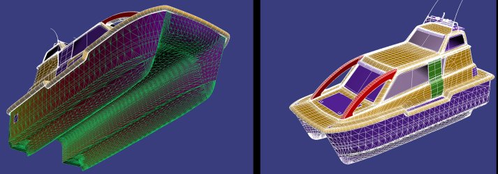
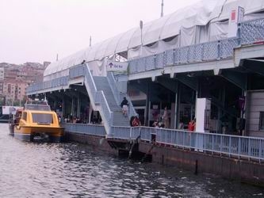
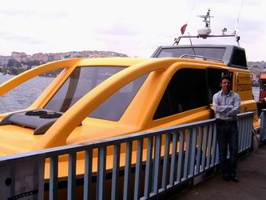
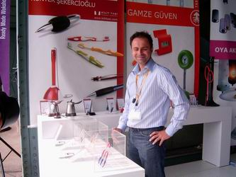
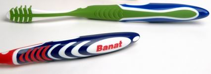
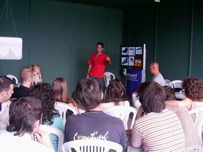

|
T-Design'a
ait standda yeni geliþtirilen Deniz Taksi sergileniyordu.
(Bu konu da daha önce portalýmýzda bir haber
yapýlmýþtý). T-Design tasarým ekibinden Murat Armaðan
Deniz Taksi'nin ürün geliþtirme prosesine ait detaylý bilgiler
verdi. Tasarýmda Pro/ENGINEER kullanýlan bu araç son haline
gelinceye kadar birçok küçük ölçekli maket ve hidrodinamik
testler yapýlmýþ. Denemeler sýrasýnda revize edilen tekne
geometrisi tersine mühendislik prosesiyle yeniden 3D CAD modeline
aktarýlmýþ..
| Murat
Armaðan ile yapýlan bir röportaj ve bu prosese ait
daha fazla bilgi, resim ve video görüntüleri TurkCADCAM.net
Dergisi ilk sayýsýnda ve ekinde verilecek Demo
CD'de yayýnlanacaktýr. |
|

Deniz
Taksi'nin CAD modelleri T-Design genelindeki tüm projelerde
kullanýlan Pro/ENGINEER ile yapýldý.
|
|
 |
 |
Kilit
Taþý, Kunter Þekercioðlu www.kilittasi.com
Aþaðýdaki
3 resimde ARZUM için tasarlanan "CEZVE TÜRK KAHVESÝ ROBOTU"
görülmektedir.
Ýlk
kez Þubat 2005 Frankfurt Ambiente Fuarý'nda sergilenen bu
Cezve Türk kahvesi cezvesinin yüzlerce yýla yayýlan tarihsel
kimliði ve Türkiye'deki gündelik yaþamdaki payý gözardý edilmeden
tasarlanmýþ. Paslanmaz çelikten imal edilmiþ Cezve elektrikli
ve kablosuz olarak, ayný kimlikte kurgulanmýþ kahve kaþýðý
ile beraber kullanýlabiliyor.
Ayrýca
daha alttaki iki resimde görülen BANAT, "TRI-ACTION"
diþ fýrçasý ise Türkiye'de tasarlanmýþ ve üretilmiþ ilk üç
komponentli diþ fýrçasý olmasýyla dikkat çekiyordu.
| Konuyla
ilgili Kunter Þekercioðlu ile yapýlan bir röportaj
detaylý resimlerle birlikte TurkCADCAM.net
Dergisi ilk sayýsýnda sayýsýnda bulunabilir. |
|
|
 |
|
BANAT,
"EXCLUSIVE" diþ fýrçasý. Malzeme: PP, TPRs
- üretim yöntemi: plastik enjeksiyon. Doðru ergonomik
datalar gözönünde bulundurularak tasarlanmýþ çift komponentli
diþ fýrçasý tasarýmý |
BANAT,
"TRI-ACTION" diþ fýrçasý, malzeme: PP, TPRs
- üretim yöntemi: plastik enjeksiyon. Doðru ergonomik
datalar gözönünde bulundurularak tasarlanmýþ üç komponentli
diþ fýrçasý tasarýmý. Türkiye'de tasarlanmýþ ve üretilmiþ
ilk üç komponentli diþ fýrçasý. |
|
 |
|
|
Yabancý
bir tasarýmcý seminer verirken |
80m
megayatch: Design
Temple tasarým firmasýndan Kemal Aydabol'un 1997-2005
yýllarý arasýnda yaptýðý yat tasarýmlarýndan birine
ait maket. |
|